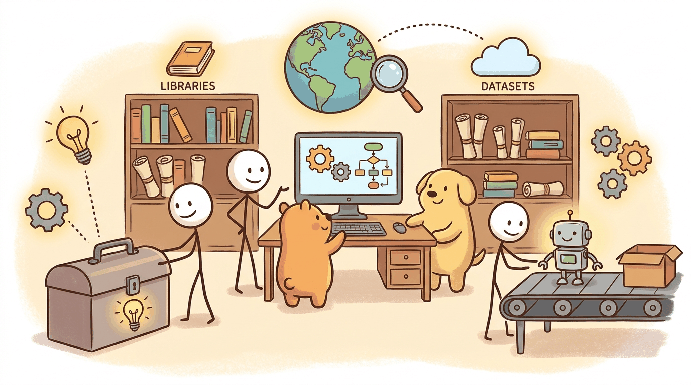

"A product is not a model. A product is the model, the prompt, the eval, the UI, the docs, the on-call rota, and the support inbox."
Author's notebook
Part X covered going from idea to shipped product. This chapter lists the toolkit that 2026 product teams reach for: AI-native code editors (Cursor, Cline, Claude Code, GitHub Copilot), project management (Linear, Notion), design (Figma with AI plugins), and product analytics (Mixpanel, PostHog, Amplitude).
For the minimum-viable AI-augmented stack:
brew install --cask cursor
npm install -g @anthropic-ai/claude-codeCursor for editing, Claude Code for agentic coding in the terminal, Linear for issues, Figma for design. Most 2026 startups ship with a variant of this stack plus PostHog for analytics.
Sections in This Chapter
What Comes Next
Part XI surveys industries: legal, finance, healthcare, education, cyber, code, and the rest. Chapter 60 closes Part XI with the per-vertical vendor map.